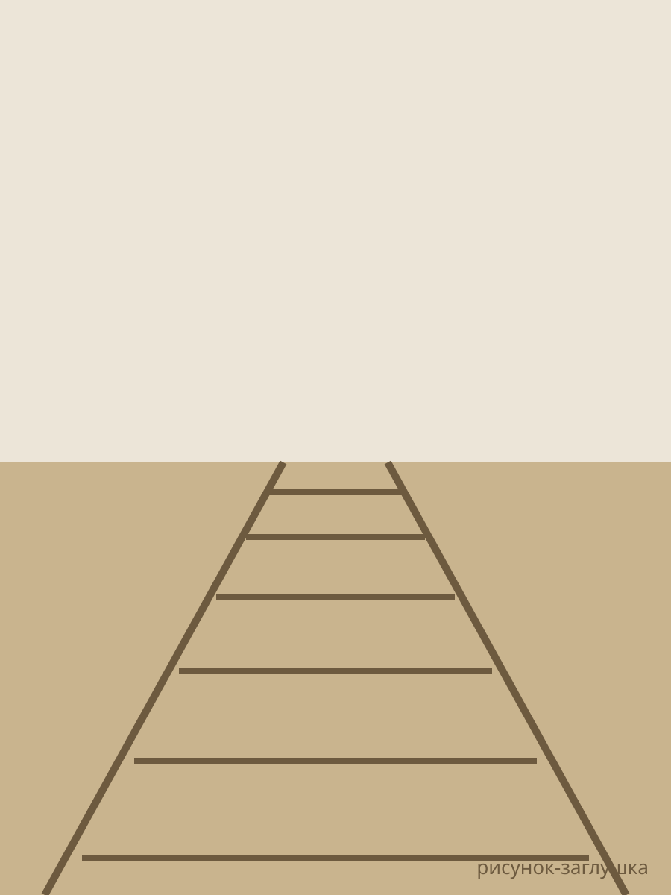
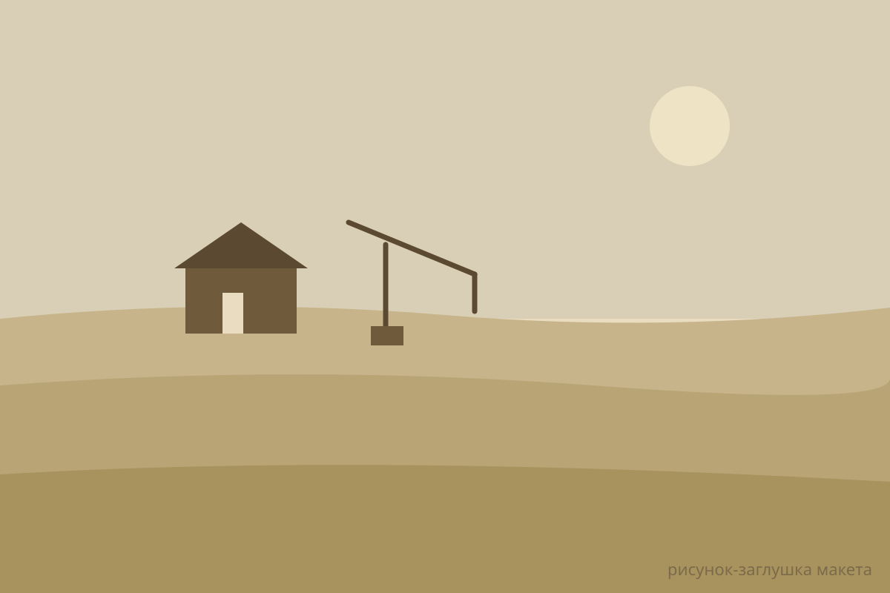

Род Шмидт
Эмма Шмидт
1931, Гнаденфлюр — 2009, Тольятти
в замужестве Корнеева
твоя бабушка
Рассказы о ней

Сутки на сборыГлава 2 · 1941

Готлиб, он же БогданГлава 3 · 1942
Родные
Что известно
- 1931
Родилась в Гнаденфлюре, немецком селе на Волгесправка 1994 года
- 1941
С семьёй выселена в Лебяжье, Павлодарская областьсправка 1994 года
- 1956
Вышла замуж за Андрея Корнеева в Павлодарепо памяти семьи, год — примерно
- 2009
Умерла в Тольяттипомнит внучка
Бумаги
На поляхВ паспорте — Богдановна, в справке — Готлибовна. Одно лицо: совпадают год, село, родители и дочери.